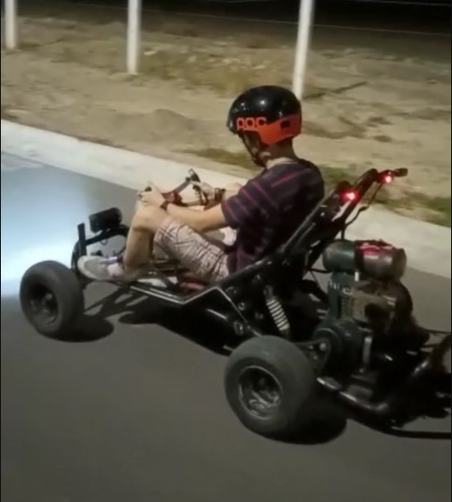

Aqui hablare acerca de mis intereses y como analizo las cosas a la hora de elegir las cosas que hare o quiero aprender, desde pequeño he tenido un gusto hacia los carros y lo que se relacione con el pensamiento de ingenieria el cual se basa en como facilitar las tareas con metodos mas faciles y practicos, todo esto fue gracias a mi papá ya que el es ingeniero y me ha enseñado el como realizar varias cosasa como soldar, el uso de herramientas de taller, instalacion de circuitos.
Y retomando el tema de los carros, hace como un año compramos un kart y lo estuvimos restaurando y ya logramos hacer que sirva correctamente y solo falta detalles tecnicos, y es algo que me hace feliz ya que aprendí varias cosas en su proceso y fue un tiempo juntos pensando en como hacer y mejorarlo para divertirnos.

Tambien me interesa todo lo que tenga que ver con la tecnologia, mas hacia el area de computadoras, tecnologias de vehiculos y maquinaria. Lo que son las computadoras tiene relativamente poco, ya que fue desde el 2019 que me compraron mi primer PC y de ahi investigue y aprendi como cuidarla, limpiarla y como poder mejorarla para que asi me dure mucho, debido a que el nicho de las computadoras en México se ve muy poco tenia que buscar todo en ingles, videos y foros hacerca de Youtubers o gente que supiera del mundillo.
Con eso igual me ayudo a mejorar y aprender mi ingles ya que conocia los conceptos basicos y de ahi entendia todo lo demas que decian, y una meta mia es lograr un nivel avanzado de ingles ya que es un lenguaje que abre muchas puertas y mas en mi carrera en el ambito de la programacion, tambien necesito el ingles para viajar y visitar a alguien.